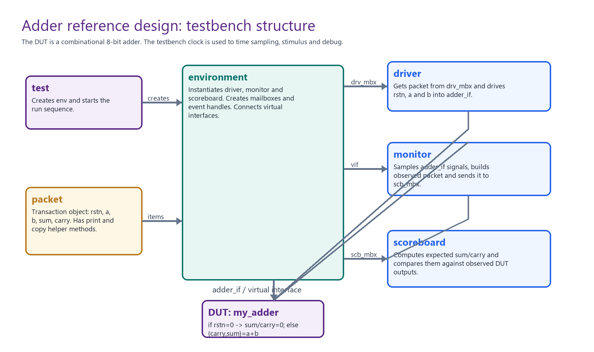
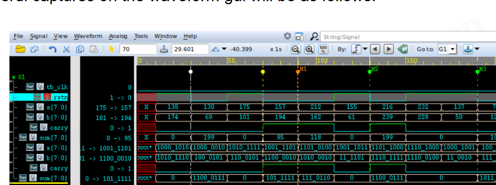
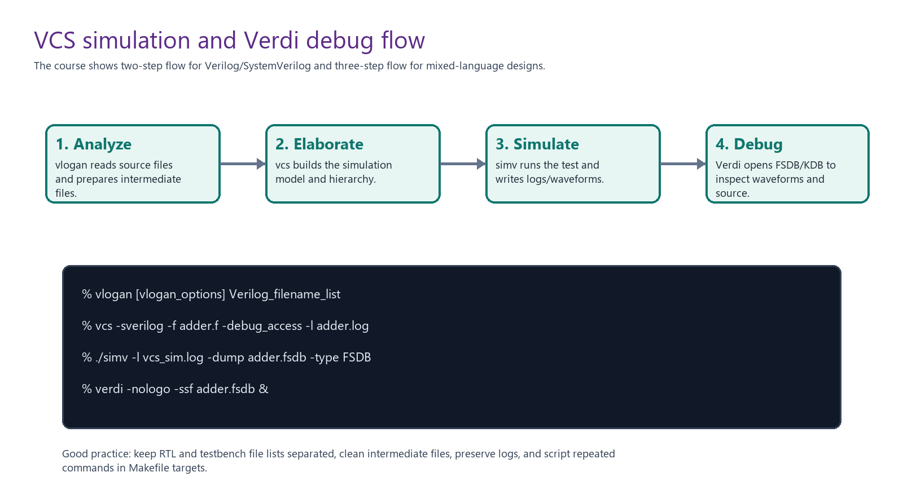

Ideia central
Este bloco é a ponte entre sintaxe e projeto. O DUT é apenas um somador de dois operandos de 8 bits, mas o objetivo real é aprender a ler a estrutura de um testbench SystemVerilog.
A pergunta agora não é "como funciona um adder?", porque isso é simples. A pergunta útil é: como o ambiente aplica estímulo, observa resposta, compara resultado e permite debug?

DUT e interface
O DUT é combinacional. Ele recebe a, b e reset, e produz sum e
carry. Uma versão conceitual limpa é:
module my_adder (adder_if intf);
always_comb begin
if (!intf.rstn) begin
intf.sum = '0;
intf.carry = 1'b0;
end else begin
{intf.carry, intf.sum} = intf.a + intf.b;
end
end
endmoduleA interface agrupa os sinais do adder:
interface adder_if();
logic rstn;
logic [7:0] a;
logic [7:0] b;
logic [7:0] sum;
logic carry;
endinterfaceMesmo o adder sendo combinacional, o testbench usa clock para organizar amostragem, aplicação de estímulo e debug. Esse é um padrão importante: clock de testbench não significa necessariamente que o DUT seja sequencial.
Virtual interface
Classes como driver e monitor não têm portas físicas. Para acessar sinais reais, elas recebem uma referência
para a interface. Essa referência é a virtual interface.
class monitor;
virtual adder_if m_adder_vif;
virtual clk_intf m_clk_vif;
endclass
Quando você encontrar isso no ambiente do professor, procure onde a conexão é feita. Normalmente será no
tb, test ou environment.
t0.e0.m_adder_vif = m_adder_if;
t0.e0.m_clk_vif = m_clk_if;Transaction object: Packet
O Packet é a transação. Ele carrega operandos, reset e resultado. Em vez de passar sinais soltos,
o testbench passa um objeto que representa uma operação.
class Packet;
rand bit rstn;
rand bit [7:0] a;
rand bit [7:0] b;
bit [7:0] sum;
bit carry;
function void print(string tag="");
$display("T=%0t %s a=0x%0h b=0x%0h sum=0x%0h carry=0x%0h",
$time, tag, a, b, sum, carry);
endfunction
function void copy(Packet tmp);
this.a = tmp.a;
this.b = tmp.b;
this.rstn = tmp.rstn;
this.sum = tmp.sum;
this.carry = tmp.carry;
endfunction
endclasstb, test e environment
O tb é a fronteira entre módulos e classes. Ele instancia interfaces, DUT, test e comandos de dump.
module tb;
clk_intf m_clk_if();
adder_if m_adder_if();
my_adder u0(m_adder_if);
initial begin
test t0;
t0 = new;
t0.e0.m_adder_vif = m_adder_if;
t0.e0.m_clk_vif = m_clk_if;
t0.run();
end
initial begin
$fsdbDumpfile("adder.fsdb");
$fsdbDumpvars(3, tb);
#1000 $finish;
end
endmodule
O test cria o cenário. O environment conecta componentes.
Em projetos maiores, vários testes reaproveitam o mesmo environment.
class env;
driver d0;
monitor m0;
scoreboard s0;
mailbox drv_mbx;
mailbox scb_mbx;
event drv_done;
virtual adder_if m_adder_vif;
virtual clk_intf m_clk_vif;
endclassO papel do environment é distribuir handles: virtual interfaces para driver/monitor, mailboxes para comunicação e eventos para sincronização.
Monitor e scoreboard
O monitor observa sinais e reconstrói uma transação. Ele não dirige o DUT.
forever begin
Packet m_pkt = new();
@(posedge m_clk_vif.tb_clk);
#2;
m_pkt.a = m_adder_vif.a;
m_pkt.b = m_adder_vif.b;
m_pkt.rstn = m_adder_vif.rstn;
m_pkt.sum = m_adder_vif.sum;
m_pkt.carry = m_adder_vif.carry;
scb_mbx.put(m_pkt);
endO scoreboard recebe o pacote observado e calcula o resultado esperado.
if (ref_item.rstn == 1'b0)
{ref_item.carry, ref_item.sum} = 0;
else
{ref_item.carry, ref_item.sum} = ref_item.a + ref_item.b;
if (ref_item.carry != item.carry)
$display("Scoreboard Error! Carry mismatch");
if (ref_item.sum != item.sum)
$display("Scoreboard Error! Sum mismatch");Logs e waveform
O log do slide mostra mensagens de driver, monitor, generator/test e scoreboard. Um log bem escrito permite reconstruir a simulação sem abrir waveform a cada pequeno problema.
[Driver] waiting for item
[Monitor] starting
Monitor a=... b=... sum=... carry=...
Scoreboard Pass! Carry match
Scoreboard Pass! sum match
$finish
VCS, Verdi e Makefile
O bloco diferencia simulador e ambiente de debug. VCS compila/elabora/simula. Verdi navega por waveform, hierarquia e código-fonte.

vcs -sverilog -f adder.f -debug_access -l comp.log
./simv -l sim.log
verdi -nologo -ssf adder.fsdb &Para Verilog/SystemVerilog puro, o curso mostra um fluxo de duas etapas: compilar/elaborar e simular. Para designs mistos com Verilog/SV e VHDL, aparece o fluxo de três etapas: analyze, elaborate e simulate.
Boas práticas de simulação
Os slides reforçam práticas que conectam diretamente com o ambiente do professor:
- Organizar diretórios de RTL, simulação, logs e scripts.
- Separar filelists de RTL e testbench.
- Manter README explicando como rodar.
- Transformar tarefas repetitivas em scripts ou Makefile.
- Limpar arquivos intermediários antes de novas rodadas.
- Usar
-debug_accessquando precisar investigar no Verdi.
O verification plan também aparece aqui: ele é para verificação o que a especificação funcional é para RTL. Mesmo em um projeto pequeno, vale listar cenários: reset, soma sem carry, soma com carry, bordas 0x00/0xFF, erros esperados e critérios de aprovação.
Arquivos do fluxo
O slide de simulação lista arquivos típicos. Isso é importante porque, no ambiente real, entender "quem chama quem" costuma começar pela árvore de arquivos e pela filelist.
| Arquivo | Papel |
|---|---|
adder.sv | RTL do DUT, contendo o somador. |
tb.sv | Top de testbench com DUT, interfaces, test, driver, monitor, scoreboard e environment. |
adder.f | Filelist usada pelo VCS para saber quais fontes compilar. |
README | Instruções de execução e detalhes do exemplo. |
Makefile | Alvos para compilar, simular, depurar e limpar arquivos temporários. |
Essa visão é diretamente reaproveitável no projeto: antes de mexer no código, devemos localizar filelists, tops, scripts e logs. Isso reduz tentativa cega.
Debug flow
Debug não é apenas abrir waveform. O fluxo correto é localizar a lógica responsável, isolar o bug e entender por que o DUT não respondeu como deveria.
| Recurso | Por que ajuda |
|---|---|
| Waveform | Mostra valores no tempo. |
| Source browser | Relaciona sinal com linha de código. |
| Schematic viewer | Ajuda a enxergar conectividade. |
| Assertion debug | Mostra regra violada no ciclo certo. |
| Transaction/messages | Conecta eventos abstratos com sinais reais. |
Quizzes explicados
response checker.
No exemplo, o response checker é o scoreboard.
False.
VCS simula; Verdi depura.
three-step flow.
Analyze, elaborate and simulate.
vlogan analyses the design for __________.
instantiations, conforme o quiz.
Na prática, entenda vlogan como etapa de análise de fontes antes da elaboração.
True, no contexto simplificado do exemplo.
Em gate-level simulation, IPs ou bibliotecas tecnológicas, essa resposta pode depender do fluxo.
Designs para praticar
O curso fecha o bloco sugerindo pequenos designs para simular. A lista não é aleatória: cada item treina um tipo de verificação.
| Design | O que treina |
|---|---|
| Adder / multiplier | Modelo de referência aritmético, carry, overflow e largura de resultado. |
| Counter with overflow | Reset, enable, contagem, wrap-around e flag de overflow. |
| Up/down counter | Direção de contagem, fronteiras e transições de controle. |
| Arbiter | Prioridade, exclusão mútua, grant correto e fairness. |
| Mux/demux | Seleção, roteamento e cobertura de todas as entradas/saídas. |
| Encoder/decoder | Mapeamento entre código e sinais one-hot/binários. |
Ponte com o projeto
Este bloco é muito útil para o ambiente clonado do professor. Quando formos trabalhar nele, vamos procurar exatamente estes elementos:
- filelists que dizem quais arquivos entram no VCS;
- Makefile com alvos de compile, simulação, debug e limpeza;
- top de testbench que conecta DUT, interface e test;
- classes ou módulos com papel de driver, monitor e scoreboard;
- logs com mensagens de PASS/ERROR;
- arquivos FSDB/VCD para abrir no Verdi.
Packet -> Driver -> Interface -> DUT -> Monitor -> Scoreboard,
e nas ferramentas:
filelist -> VCS -> simv -> log/waveform -> Verdi.
Base Markdown: aula didática, texto extraído, cobertura slide a slide.